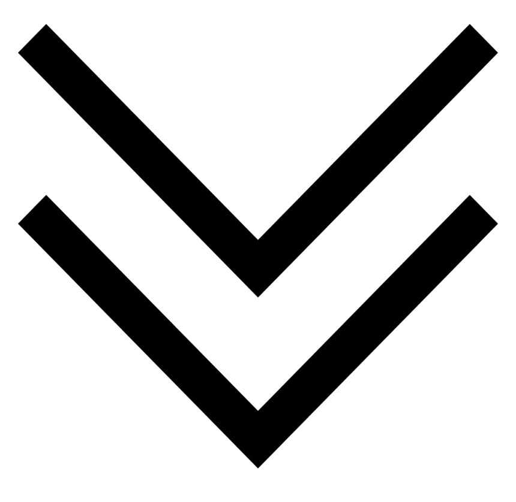

Norway, 2016
Simon Engström

Norway, 2016
Hi! My name is Simon "simpen" Engström and I am a Software Engineering student at Chalmers Univeristy of Technology in Gothenburg, Sweden.
I engineer software.
Before university I went to school at NTI Gymnasiet Skövde, where I studied Software development with focus on engineering. After graduating I started working full time as an IT-technician at Dialect IT Solutions, where I had worked part-time during my school time as much as possible. I worked there for a year before moving to Gothenburg where I now study Software Engineering at Chalmers University of Technology.